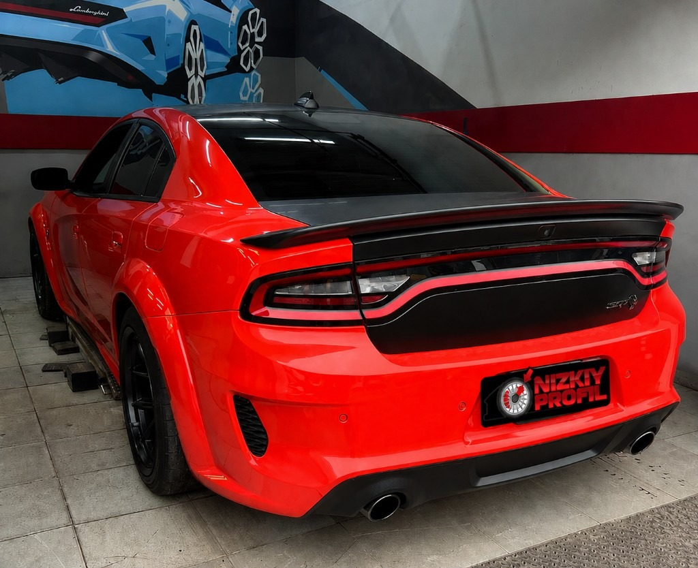
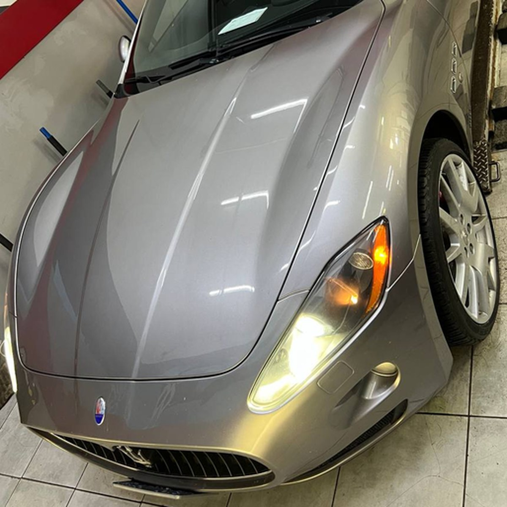
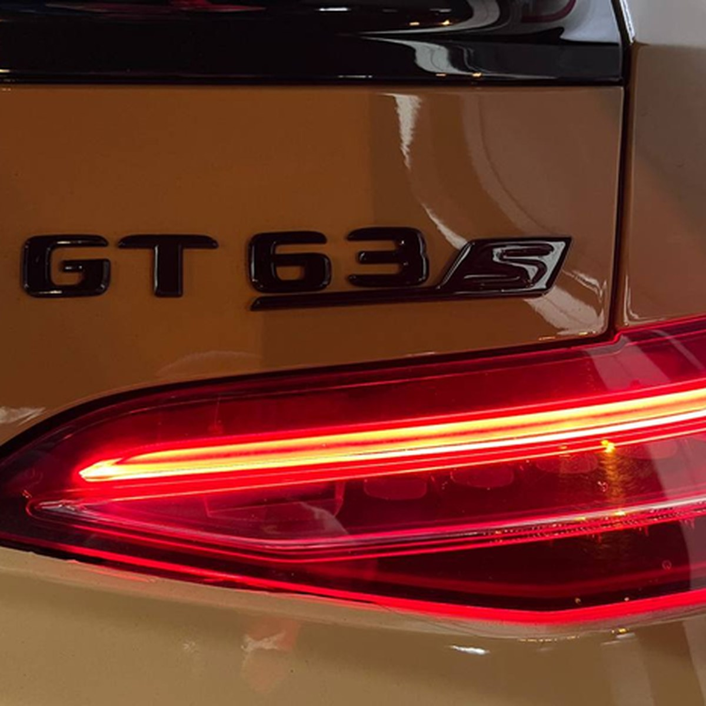

Шиномонтаж
Собираем и балансируем колеса до R24: низкий профиль, RunFlat, A/T, M/T, мото-колеса, датчики давления и аккуратная сезонная замена.
Сборка без спешки и лишних рисков
Перед монтажом проверяем шину, диск, вентиль, датчики давления и состояние посадочной полки. После сборки колесо балансируется, проверяется на биение и готовится к установке на автомобиль.
- Низкий профиль, RunFlat и усиленный борт
- Легковые, 4x4 и мото-колеса
- Сезонный шиномонтаж
- Балансировка после сборки колеса
- Ремонт проколов после осмотра шины



Стоимость работ по диаметру колеса и типу автомобиля
Легковые, кроссоверы и минивэны, коммерческий транспорт. Цена зависит от радиуса, профиля, RunFlat и дополнительных работ.